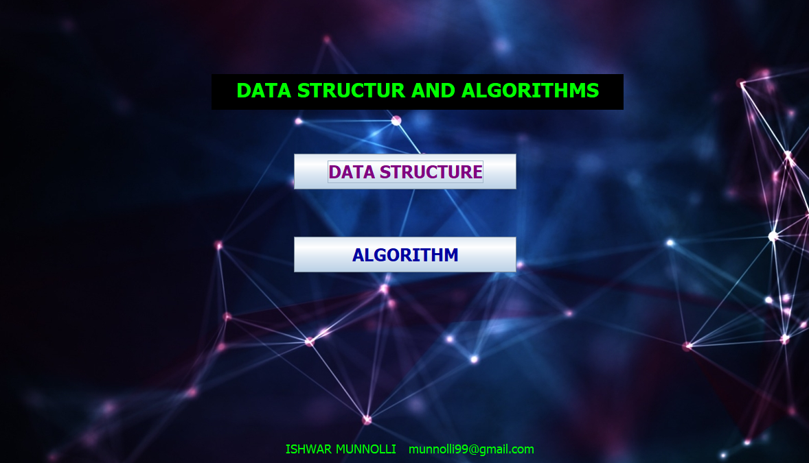

This Is Window Based Application Which Represents The
Functionalities/ Behaviors Of Different Data
Structure And Algorithms
Technologies Used
Programing Language – Java
Graphical User Interface – Java Swing
Concept Used:
Core Java - Data Types, Methods, Inner Classes, etc
Data Structures – Array, Stack, Queue,
Circular Queue, Singly LinkedList, Doubly
LinkedList, etc.
Algorithms - Bubble Sort, Selection Sort,
Insertion Sort, Linear Search, Binary Search.
What is Array in Data Structure?
An array is a data structure for storing more than one data item that has a similar data type.
The items of an array are allocated at adjacent memory locations. These memory locations
are called elements of that array. The total number of elements in an array is called length.
Why do we need arrays?
Here are some reasons for using arrays in data structure:
• Arrays are best for storing multiple values in a single variable
• Arrays are
better at processing many values easily and quickly.
• Sorting and searching the values is easier in arrays.
Home Page of Application
